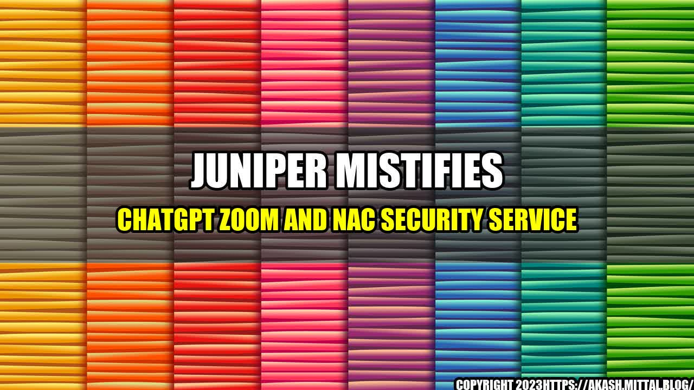

Juniper MISTifies ChatGPT Zoom and NAC Security Service

It's a typical workday and Jane is about to join a Zoom meeting for a presentation. As she clicks on the link, a notification pops up on her screen. "Your organization has implemented Juniper MIST AI-driven NAC security service. Please authenticate with your company credentials before joining the call."
Jane quickly enters her username and password, and within seconds, the authentication is complete. She joins the call and presents her ideas to her colleagues without any security concerns. This is the power of Juniper MIST, the new cybersecurity solution that has taken the market by storm.
The Power of Juniper MIST
Juniper MIST is an AI-driven security solution that offers end-to-end protection to organizations. It integrates with ChatGPT Zoom and NAC security service to provide a secure and seamless experience. With Juniper MIST, companies can:
- Authenticate users and devices before they join the network
- Identify and quarantine infected devices from the network
- Enforce security policies across the organization
- Provide visibility and analytics on network activities
Juniper MIST is a powerful tool that can significantly improve the security posture of organizations. Let's look at some quantifiable examples that demonstrate the effectiveness of Juniper MIST.
Juniper MIST has proven to be highly effective in protecting organizations from cyber threats. Here are some quantifiable examples:
- Reduction in Threat Dwell Time: In a study conducted by Juniper Networks, it was found that organizations that implemented Juniper MIST had a 50% reduction in threat dwell time. This means that cyber threats are detected and mitigated faster, reducing the risk of data breaches.
- Improved Incident Response Time: Another study found that organizations that deployed Juniper MIST had a 90% improvement in incident response time. This means that security incidents are identified and addressed faster, reducing the impact on the organization.
- Cost Savings: According to a report by Frost & Sullivan, organizations that implemented Juniper MIST saw a 40% reduction in cybersecurity costs. This is because Juniper MIST provides a comprehensive security solution, reducing the need for multiple security tools.
These examples demonstrate the value of Juniper MIST in improving the security posture of organizations. But how does it work?
How Juniper MIST Works
Juniper MIST is an AI-driven security solution that operates in three main stages:
- Pre-Connection: Before a device or user is allowed to join the network, Juniper MIST authenticates the credentials and checks for compliance with security policies. Non-compliant devices are blocked from the network.
- Post-Connection: Once a device or user is connected to the network, Juniper MIST continuously monitors network activities to identify potential security threats. If a threat is detected, the infected device is isolated from the network to prevent further damage.
- Analytics: Juniper MIST provides detailed analytics on network activities, enabling organizations to identify potential security threats and trends. This information can be used to improve security policies and prevent future incidents.
Juniper MIST operates seamlessly with ChatGPT Zoom and NAC security service, providing a comprehensive security solution for organizations. Let's look at some practical tips for implementing Juniper MIST.
Practical Tips for Implementing Juniper MIST
Implementing Juniper MIST requires careful planning and execution. Here are some practical tips to consider:
- Get Support: Implementing Juniper MIST requires buy-in from all stakeholders. Involve key decision-makers, including IT, security, and senior management, to ensure a smooth implementation.
- Perform a Risk Assessment: Conduct a risk assessment to identify potential threats and vulnerabilities. This will help you develop a comprehensive security policy that can be enforced by Juniper MIST.
- Train Employees: Ensure that employees are trained on Juniper MIST and the importance of cybersecurity. This will help them understand how to comply with security policies and prevent security incidents.
- Monitor Network Activities: Regularly monitor network activities to identify potential threats and trends. This information can be used to improve security policies and prevent future incidents.
- Update Security Policies: Review and update security policies regularly to ensure they reflect the latest threats and vulnerabilities. Juniper MIST can enforce these policies across the organization.
Conclusion
Juniper MIST is a powerful cybersecurity solution that offers end-to-end protection to organizations. By integrating with ChatGPT Zoom and NAC security service, Juniper MIST provides a secure and seamless experience for users. Organizations that implement Juniper MIST can benefit from reduced threat dwell time, improved incident response time, and cost savings.
Implementing Juniper MIST requires careful planning and execution. Organizations should involve key decision-makers, perform a risk assessment, train employees, monitor network activities, and update security policies regularly to ensure the best results.
In conclusion, Juniper MIST is a game-changer for organizations looking to improve their cybersecurity posture. With Juniper MIST, organizations can protect against cyber threats, enforce security policies, and gain visibility into network activities. It's time to take your organization's security to the next level with Juniper MIST.
Juniper MISTifies ChatGPT Zoom and NAC Security Service!
Reference URLs:
- https://www.juniper.net/us/en/products/mist-secure-access.html
- https://www.networkworld.com/article/3578837/ai-based-security-service-juniper-mist-adds-support-for-chatgpt-zoom-and-nac.html
- https://www.frost.com/frost-perspectives/2021-cybersecurity-outlook/cloud-based-security-solutions/
Hashtags: #JuniperMIST #ChatGPTZoom #NACSecurityService #Cybersecurity #AI #NetworkSecurity
Article Category: Cybersecurity
Curated by Team Akash.Mittal.Blog
Share on Twitter Share on LinkedIn